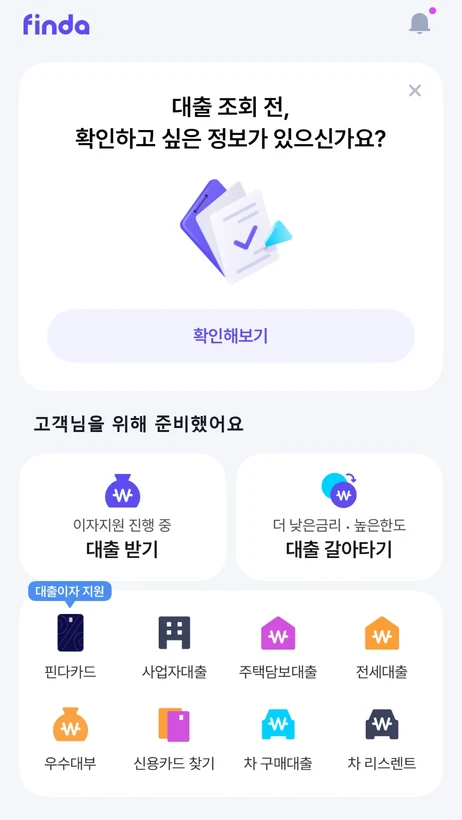
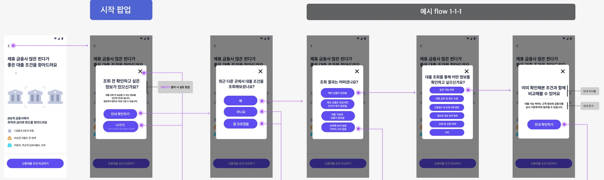

토스씨엑스 CX 기획 매니저 지원
문의를 줄이는 가장 좋은 방법은,
문의가 생기는 이유를 없애는 거예요
핀테크 대출 서비스의 CX팀에서 VOC를 분석하고 고객 경험을 개선하는 리서처예요. 반복되는 문의를 데이터로 쪼개 원인을 찾고, 그 원인을 기능과 정책으로 바꾼 뒤 문의가 실제로 줄었는지까지 확인해 왔어요.
사례 1 · 문제 정의 → 개선 실행 → 효과 검증
"대출 신청을 취소하고 싶어요"
매달 반복되던 문의를 기능으로 없앴어요
데일리 VOC 리포트를 쓰다가 '신청한 대출을 취소하고 싶다', '진행 중인 상품을 지워 달라', '알림을 그만 보내 달라'는 문의가 계속 들어오는 걸 발견했어요. 고객은 "다른 앱에서는 바로 취소된다"고 했어요.
- 1~9월 VOC를 다시 분류해 신청 취소 문의와, 비슷하게 생긴 '부결 신고·심사 괴리' 문의를 나눠 매달 꾸준히 반복되는 문의라는 걸 숫자로 보여 줬어요.
- 고객이 말한 타사 3곳에서 직접 대출을 신청하고 취소해 봤어요. 실제로는 금융사에 취소를 보내기보다 앱 안의 신청 이력을 지우거나 숨기는 방식에 가까웠어요.
- 정리하면, 고객이 원한 건 금융사 취소가 아니라 '내 화면에서 이 신청을 정리하는 것'이었고, 기존의 '부결 신고' 기능은 오히려 "왜 계속 보여 주냐"는 문의를 만들고 있었어요.
VOC 근거와 타사 비교를 묶어 담당 PO에게 이슈를 올리고, 월별 인입 규모를 정리해 과제의 근거로 넘겼어요. PO가 바로 기획서와 화면 흐름을 만들었고, 사업·개발·법무팀이 함께 검토해 기존 '부결 신고'를 '신청 취소'로 바꾸고 취소한 상품은 그날 다시 보이지 않게 정리했어요. 이슈를 올린 지 약 2주 만인 10월에 전 대출 업권에 출시됐어요.
출시 전후 같은 길이(4주)로 비교했더니 신청 취소 관련 문의가 48% 줄었어요. 상담팀에서도 "체감할 정도로 줄었다"는 반응이 나왔어요.
문의 하나를 줄이려고 새 기능을 만든 게 아니라, 문의를 만들던 기능을 바꾼 것이 핵심이었어요. 그 뒤로는 반복 문의를 볼 때 "안내가 부족한가, 기능이 없나, 있는 기능이 문제인가"를 먼저 나눠 봐요.
사례 2 · 인입 구조 진단 → 정책 조정
불만이 어디에 몰려 있는지 찾으니,
고칠 곳이 보였어요
제휴 대출 상품의 조회는 늘었는데, 신청한 사람이 실제 대출까지 가는 비율이 다른 업권의 절반 수준이었어요. 사업팀이 "신청 이후 고객이 무엇을 겪는지" 알고 싶다고 요청했어요.
- 출시 이후 쌓인 파트너사별 VOC를 전수 분석해 '안내받은 한도와 최종 심사 결과가 다르다'는 불만이 중심이라는 걸 찾았어요.
- 고객 인터뷰로 이유를 확인해 심사 전·중·후의 핵심 문제 4가지를 정리했어요.
- 후속 분석에서 이 불만의 약 70%가 한 파트너사에 몰려 있다는 걸 찾아 사업팀에 전달했어요.
- 사업팀이 그 파트너사와 협의해 가승인 한도를 조정했어요.
- '신청이 완료됐는지 모르겠다'는 문의는 인증 완료 화면에 '접수가 완료되었다'는 안내를 넣는 것으로 이어졌어요.
- 파트너사별 이슈 VOC를 정기적으로 전달하는 흐름도 제안했어요.
그 파트너사의 VOC가 7월에서 9월 사이 66% 줄었어요. 10월 수치는 상품 점검 기간이 섞여 있어 효과로 세지 않았어요.
실행률은 연말 한도 시즌 같은 바깥 요인에 크게 흔들려 이후에도 올라가지 않았어요. 그래서 성과를 볼 때 바깥 영향을 크게 받는 지표만 보지 않고, 고객 경험을 바로 보여 주는 VOC를 선행 지표로 함께 두는 것이 중요하다는 걸 배웠어요.
개선을 한 번으로 끝내지 않게, 운영을 시스템으로
공고에서 말한 '선행적인 대응 체계', '운영 개선의 시스템화'에 해당하는 일이에요.
프로덕트팀의 언어로 쓰기
대출 비교 화면의 이탈을 줄이는 기획에서 부가서비스 연계 화면 흐름과 FE·BE·DB 명세까지 담은 PRD를 직접 썼어요. 사내 경진대회 1위를 했고, 이후 실험 설계 문서로 발전시켜 앱 배포까지 이끌었어요.
출시 전 고객 리스크 점검
새 기능이 나온 뒤에야 불편이 드러나는 일을 막으려고, 출시 전에 고객 관점 리스크를 3개 영역 체크리스트로 점검하는 절차를 처음부터 만들었어요. 예상 상담 인입량과 비용도 숫자로 계산해 함께 올려요.
팀별 VOC 지표와 대시보드
하나뿐이던 VOC 보드를 팀이 실제로 쓰는 지표와 화면에 맞게 다시 설계하고 있어요. CX팀뿐 아니라 제품·개발·그로스·사업팀이 볼 VOC KPI를 정의했어요.
VOC 분류·리포트 자동화
흩어진 상담 내용을 문의 유형별로 자동 분류·요약하는 기준을 만들고, 데일리 VOC 리포트 작성과 공유를 Claude Code로 자동화했어요.
AI 자동상담 도입 테스트
상담 챗봇 도입을 위해 팀원들과 문의 카테고리를 나눠 채팅 데이터를 쌓고, 유형별 응답을 평가하는 테스트에 참여했어요.
VOC를 전사가 보게
VOC 뉴스레터의 포맷을 정하고 핵심 이슈 중심으로 큐레이션해, 열람률을 63%에서 72%까지 올렸어요.
고객 곁에서
원치 않는 대출을 받은 고객에게 절차를 안내하고 도울 방법을 함께 찾았어요. 다음 날 고객이 문제가 해결됐다며 감사를 전했고, 사내에서 공개 칭찬을 받았어요.
화면으로 옮긴 예: 떠나려는 고객에게 먼저 묻는 설문 배너

궁금한 걸 상담 전에, 화면에서 풀기
대출 비교 화면에서 뒤로 가려는 고객에게 "대출 조회 전, 확인하고 싶은 정보가 있으신가요?"라고 먼저 물어요.
- 다른 곳에서 조회해 봤는지
- 그 결과가 어땠는지
- 무엇이 가장 궁금한지
답에 맞춰 필요한 안내를 바로 보여 줘요. 이탈 리서치에서 찾은 불안을 기획서와 설계 문서로 옮겨 배포까지 이끈 사례로, 목표 지표(다음 단계 클릭률 +15% lift)를 달성했어요.
휴대폰 화면은 실제 배포 화면이에요. 고객 이름은 가렸어요.

이번 지원을 위해 직접 정리했어요
토스씨엑스에서 먼저 해 보고 싶은 것
토스씨엑스의 내부 데이터는 알지 못해요. 제가 핀다에서 VOC를 줄일 때 쓴 방식을 일반화한 공개 자료 기반 가설이에요.
1. 문의를 '왜 생겼나'로 네 갈래로 나누기
안내가 없거나 찾기 어려워요.
FAQ · 화면 문구 · 챗봇기능이 없어 상담원을 거쳐야 해요.
제품 기능안내받은 것과 결과가 달라요.
정책 · 파트너 협의오류나 장애가 있었어요.
시스템 · 운영 대응2. 규모 × 반복성 × 바꿀 수 있는 정도로 순서 정하기
월 인입량과 리드타임, 같은 원인으로 다시 들어오는 비율, 그리고 문구 수정(빠름)·정책 협의(중간)·기능 개발(느림) 중 어디서 고칠 수 있는지를 함께 봐요. 크고 반복되는데 빨리 고칠 수 있는 것부터 하고, 기능 개발이 필요한 것은 근거를 쌓아 프로덕트팀 과제로 올려요.
3. 같은 길이로 전후 비교하고, 옮겨 간 문의까지 확인하기
해당 유형 인입량과 SLA·CSAT를 함께 보고, 문의가 줄어든 대신 다른 유형으로 옮겨 가지 않았는지 확인해요.
4. 자동화할 문의와 없앨 문의를 나누기
'몰라서 묻는 문의'는 챗봇·자동응답 후보로, 유형별 상담 성공률을 보고 자동화를 정해요. '할 수 없어서', '기대와 달라서' 생기는 문의는 자동응답으로 막기보다 원인을 없애는 과제로 넘겨요.
일하는 방식
숫자 뒤의 맥락까지 파고들어요
문의 건수가 왜 그렇게 나왔는지 끝까지 확인해요. 기간이나 기준이 섞인 숫자는 원본을 찾아 다시 맞추고, 부풀리지 않아요.
공유가 아니라 변화로 끝내요
VOC를 전달하는 데서 멈추지 않고, 기능이나 정책이 바뀌고 문의가 줄었는지 확인하는 데까지 챙겨요.
직접 써 보고 근거를 붙여요
고객이 "다른 앱은 된다"고 하면 직접 신청하고 취소해 봐요. 화면으로 확인한 근거가 있으면 여러 팀을 설득하기가 훨씬 쉬워져요.
리서치 5년차예요. 핀다 CX팀에는 2025년 6월에 합류해 VOC 분석과 고객 경험 개선을 맡고 있고, 그 전에는 사회조사와 정책 연구에서 설문·인터뷰를 설계하고 분석했어요.